Tema 3. Cableado estructurado y componentes¶
En este tema montamos la infraestructura de una LAN: desde la NIC del PC hasta el rack, pasando por tomas, paneles, canalizaciones y la electrónica (switch, router, AP…).
Primera clase
Empieza por el cuestionario inicial. No hace falta estudiar el tema completo antes: el cuestionario sirve para ver qué sabes al empezar.
Propuesta didáctica¶
Trabajamos los RA2, RA3 y RA4 del módulo Redes de área local (0225):
RA2. Despliega el cableado de una red local interpretando especificaciones y aplicando técnicas de montaje.
RA3. Interconecta equipos en redes locales cableadas describiendo estándares de cableado y aplicando técnicas de montaje de conectores.
RA4. Instala equipos en red, describiendo sus prestaciones y aplicando técnicas de montaje.
Criterios de evaluación (selección)¶
RA2
- CE2d: Se han reconocido los detalles del cableado de la instalación y su despliegue (categoría del cableado, espacios por los que discurre, soporte para las canalizaciones, entre otros).
- CE2e: Se han seleccionado y montado las canalizaciones y tubos.
- CE2f: Se han montado los armarios de comunicaciones y sus accesorios.
- CE2g: Se han montado y conexionado las tomas de usuario y paneles de parcheo.
- CE2i: Se han etiquetado los cables y tomas de usuario.
- CE2j: Se ha trabajado con la calidad y seguridad requeridas.
RA3
- CE3a: Se ha interpretado el plan de montaje lógico de la red.
- CE3b: Se han montado los adaptadores de red en los equipos.
- CE3d: Se han montado los equipos de conmutación en los armarios de comunicaciones.
- CE3e: Se han conectado los equipos de conmutación a los paneles de parcheo.
- CE3f: Se ha verificado la conectividad de la instalación.
- CE3g: Se ha trabajado con la calidad requerida.
RA4
- CE4a: Se han identificado las características funcionales de las redes inalámbricas.
- CE4b: Se han identificado los modos de funcionamiento de las redes inalámbricas.
- CE4c: Se han instalado adaptadores y puntos de acceso inalámbrico.
- CE4d: Se han configurado los modos de funcionamiento y los parámetros básicos.
VLAN
Las VLAN (CE4j) se desarrollan en el Tema 6. Aquí solo las mencionamos como capacidad de muchos switches gestionables.
Contenidos¶
- Adaptador de red (NIC): tipos, MAC, dúplex, velocidades.
- Armario / rack 19″ y unidades U; paneles de parcheo; TO y latiguillos.
- Canalizaciones, bandejas, guías y pasahilos.
- Electrónica: hub, switch, router, gateway, punto de acceso.
- Visión ISO/TIA: horizontal, backbone y distancias orientativas.
Programación de aula (orientativa, ~14–16 h)¶
| Sesiones | Contenidos | Actividades |
|---|---|---|
| 1 | Presentación + cuestionario inicial | Cuestionario |
| 2 | NIC y adaptadores | AC301 |
| 3–4 | Rack, panel, TO, guiado | AC302, AC304 |
| 5–7 | Electrónica de red + AP | AC303 |
| 8–9 | Normas ISO/TIA; distancias; etiquetado | — |
| 10–11 | Propuesta electrónica (centro educativo) | AC305 |
| 12–13 | Packet Tracer: cableado estructurado | PR301 |
| 14–15 | WLAN / NetAcad (AP) | PR303 |
| 16–17 | Proyecto aulario (grupo) | PR302 |
Cuestionario inicial¶
Antes de empezar — responde con lo que sepas
- ¿Qué es un adaptador de red (NIC) y qué características tiene?
- ¿Qué elementos hay dentro de un armario de comunicaciones?
- ¿Para qué sirve un panel de parcheo?
- ¿Qué diferencia hay entre un hub y un switch?
- ¿Qué hace un router en una red?
- ¿Cómo funciona un punto de acceso Wi‑Fi?
- ¿Qué tipos de tomas de usuario conoces?
- ¿Qué es PoE y para qué se usa?
- ¿Qué distancia máxima suele tener el cableado horizontal?
Soluciones
Las soluciones se trabajan en clase o se publican en Aules cuando proceda.
¿Qué es el cableado estructurado?¶
Sistema de cableado de telecomunicaciones que unifica voz, datos y otros servicios bajo un mismo diseño (normas ANSI/TIA/EIA‑568/569, ISO/IEC 11801…). Objetivos:
- Flexibilidad: reorganizar puestos sin rehacer todo el tendido.
- Evolución: cambiar electrónica sin tirar el cableado pasivo.
- Centralización: concentrar servicios en distribuidores (racks / salas TR).
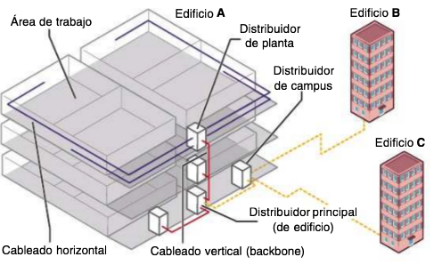
Adaptador de red (NIC)¶
La NIC (Network Interface Card) permite conectar el equipo a la red (integrada, PCIe, USB, Wi‑Fi…). Cada interfaz tiene una dirección MAC de 48 bits fijada de fábrica.
Características que debes saber leer en una ficha:
| Aspecto | Opciones habituales |
|---|---|
| Interfaz | RJ‑45, fibra (SC/LC…), inalámbrica |
| Dúplex | Half / full |
| Velocidad | 10/100/1000 Mbps (y superiores) |
| Extra | Wake‑on‑LAN, PoE (en el lado del switch), etc. |

Armario de distribución (rack)¶
El rack concentra el cableado de una zona: paneles de parcheo, switches, PDU/UPS, ventilación y accesorios de ordenación.
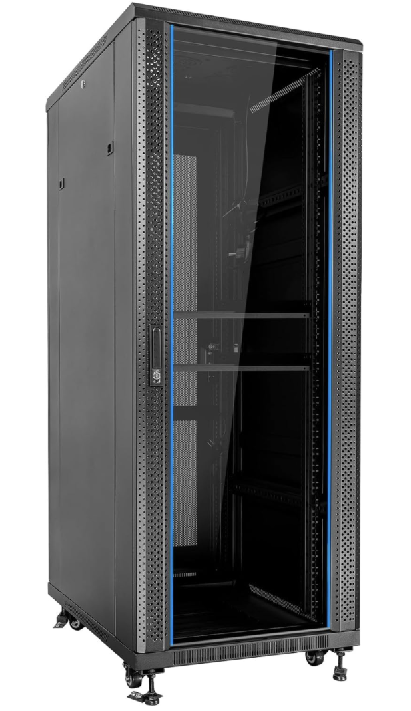
Estándar 19″ y unidad U¶
- Anchura interior estándar: 19 pulgadas → equipos rackeables.
- Altura en unidades U (~4,45 cm ≈ 1,75″). Un panel de 24 puertos suele ocupar 1 U.
- Armarios pequeños (<12 U) a pared; medianos y grandes (>24 U) de suelo, a menudo con ventilación y filtrado.
Panel de parcheo¶
El patch panel organiza las líneas que entran al armario: cada toma del panel se corresponde (y se etiqueta) con una TO del área de trabajo.
- Típico: 24 o 48 puertos RJ‑45 en 1–2 U.
- También hay paneles / cajones de fibra.
- En la parte trasera: regletas IDC con código de colores.
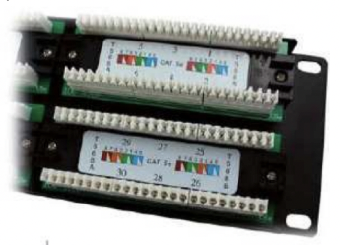
Tomas de usuario, latiguillos y guiado¶
Toma de usuario (TO)¶
Punto de conexión en el puesto: una o más RJ‑45 hembra (datos / voz / reserva). Tipos:
- Superficie (canaleta).
- Empotrable.
- Suelo técnico.
Latiguillos¶
Cables cortos con RJ‑45 en ambos extremos:
- Equipo ↔ TO.
- Panel ↔ switch (o panel ↔ panel).
Longitudes comerciales habituales: 0,5 / 1 / 2 m. A partir de Cat. 6, en muchos pliegos se prefieren latiguillos certificados de fábrica.
Soportes de guiado¶
| Elemento | Función |
|---|---|
| Canalizaciones | Tubos / canaletas por paredes y suelos |
| Bandejas | Mazos en techo o suelo técnico |
| Guías de cable | Orden en el rack |
| Pasahilos | 1 U para peinar latiguillos |
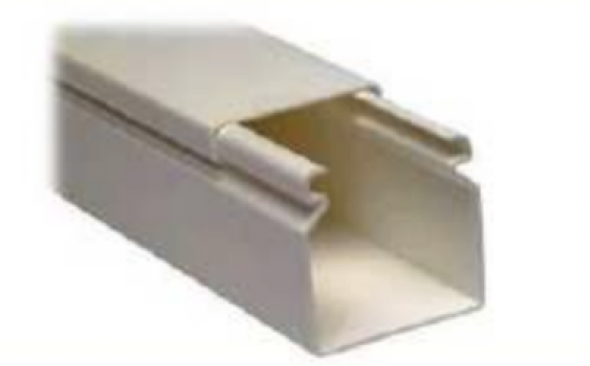
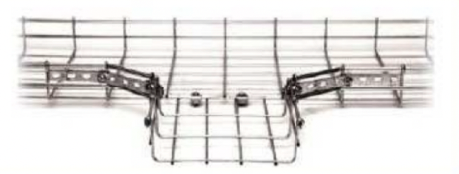
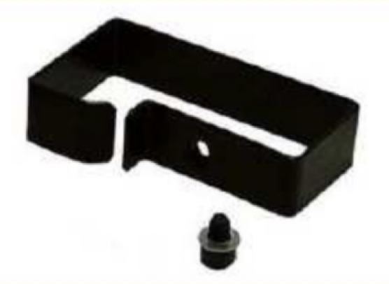
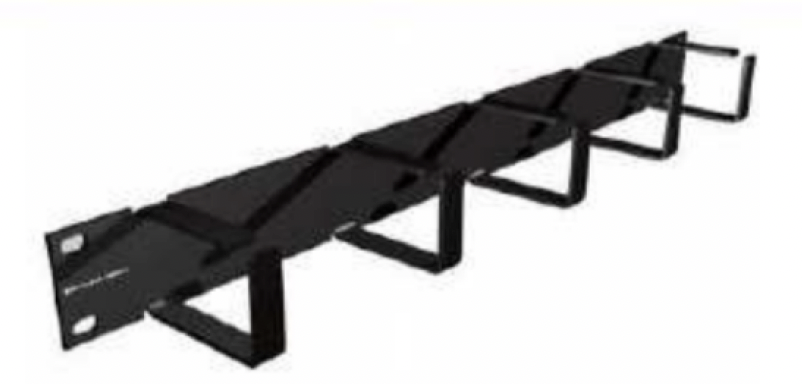
Etiquetado
Sin etiquetas coherentes (TO ↔ panel ↔ puerto de switch), el mantenimiento se convierte en caza del tesoro. Es criterio de calidad (CE2i).
Electrónica de red¶
Dispositivos que regeneran, concentran, conmutan o encaminan el tráfico. Suelen ir en el rack, pero un AP puede ir en techo/pared.
| Dispositivo | Capa OSI | Idea clave |
|---|---|---|
| Repetidor | 1 | Regenera la señal; amplía el dominio de colisión |
| Hub | 1 | Replica a todos los puertos (legacy) |
| Switch | 2 | Reenvía por MAC; reduce colisiones |
| Router | 3 | Une redes distintas (IP) |
| Gateway | varias | Frontera / traducción / seguridad |
| AP | 2 (+ radio) | Extiende la LAN por Wi‑Fi |
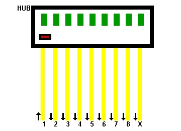
Switch (lo habitual en LAN)¶
Aprende MAC ↔ puerto; full‑dúplex; 10/100/1000… Modelos no gestionables vs gestionables (VLAN, QoS, SNMP…). PoE alimenta AP, cámaras IP, etc. por el mismo UTP.
Router y gateway¶
- Router: tablas de rutas, a menudo NAT/DHCP en el borde LAN–WAN.
- Gateway: puerta de enlace; puede integrar firewall, VPN, proxy…
Punto de acceso (AP)¶
Enlaza clientes Wi‑Fi con la red cableada. Modos habituales: AP, repetidor, bridge. Interior / exterior; muchos se alimentan por PoE.
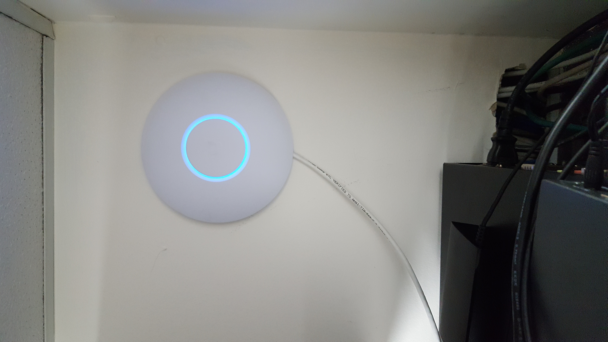
Más adelante
Seguridad Wi‑Fi (WPA2/3, SSID…) y VLAN se trabajan con más detalle en temas posteriores (Tema 6 para VLAN).
Normas y distancias (visión rápida)¶
Familia útil: TIA‑568 (cableado), 569 (espacios/canalizaciones), 606 (etiquetado), 607 (tierra), equivalente ISO/IEC 11801.
Bloques funcionales¶
- Área de trabajo — puestos + TO + latiguillo corto.
- Horizontal — TO ↔ panel del distribuidor de planta (FD).
- Backbone (vertical) — enlaza distribuidores de planta con el de edificio (BD).
- Campus — entre edificios (CD), normalmente fibra.
Distancias orientativas (cobre)¶
| Tramo | Límite habitual |
|---|---|
| Horizontal (TO ↔ panel) | 90 m de cable permanente |
| Latiguillos (ambos extremos) | hasta ~5 m + ~5 m → 100 m canal completo |
| Equipo ↔ TO | latiguillo corto (p. ej. ≤ 5 m) |
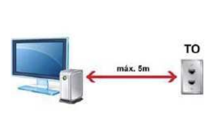
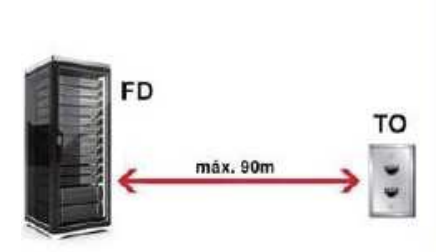
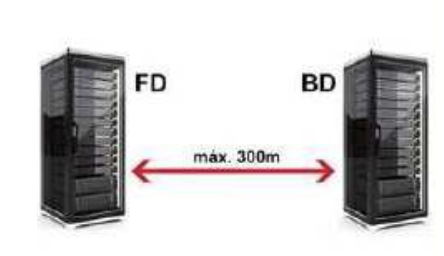
Con fibra el backbone y el campus cubren distancias mucho mayores (cientos de metros / km según tipo).
Actividades¶
Formato de entrega
Las entregas en Aules son obligatorias en Markdown (.md). No se aceptan PDF.
Nombre del archivo: AC3XX.md o PR3XX.md (sustituye XX por el número). Respeta la fecha de vencimiento.
Escribiremos los .md con Visual Studio Code.
Cómo empezar
- Guía de Markdown: tutorialmarkdown.com/guia
- Documentación de Visual Studio Code: code.visualstudio.com/docs
AC301 — NIC comparativa¶
- AC301. (RA3 // CE3b // RA4 // CE4a // AC 0–1). Tabla comparativa de NIC (cableada / USB / Wi‑Fi): velocidades, dúplex, interfaz y uso típico. Incluye qué es la MAC.
AC302 — Armario / rack¶
- AC302. (RA2 // CE2f // AC 0–1). Documenta estructura del rack 19″, unidades U, elementos internos (panel, electrónica, PDU, guías) y tipos según tamaño.
AC303 — Electrónica y capas OSI¶
- AC303. (RA3 // CE3d // RA4 // CE4a, CE4b // AC 0–1). Tabla: hub, switch, router, gateway y AP — capa OSI, función, escenario de uso y una limitación de cada uno.
AC304 — Tomas, latiguillos y guiado¶
- AC304. (RA2 // CE2d, CE2e, CE2g, CE2i // AC 0–1). Tipos de TO, uso de latiguillos, canalizaciones/bandejas/guías/pasahilos y buenas prácticas de etiquetado.
AC305 — Propuesta electrónica (centro educativo)¶
- AC305. (RA3 // CE3a, CE3d // RA4 // CE4c // AC 0–1). Propón la electrónica para un centro con dos edificios: switches de armario, router de salida, gateway/firewall y AP interiores/exteriores. Diagrama en Excalidraw, draw.io o Dia + breve justificación en el
.md.
PR303 — WLAN / NetAcad (AP y parámetros)¶
- PR303. (RA4 // CE4a, CE4b, CE4c, CE4d, CE4e, CE4f, CE4i // PR 0–10). Itinerario Cisco NetAcad + simulación Packet Tracer: instalar/configurar un punto de acceso (o router inalámbrico de PT), modos de funcionamiento, SSID, canal/banda, autenticación básica (WPA2/WPA3), comprobar conectividad de clientes Wi‑Fi y documentar parámetros. Completa el módulo NetAcad de WLAN que indique el profesor y adjunta evidencias (capturas / checklist) en
PR303.md. El guion de PT se facilitará en clase / Aules.
| Criterio | Descripción | Puntos |
|---|---|---|
| Características y modos | CE4a–CE4b documentados | 0–2 |
| Instalación / PT | AP o equivalente operativo | 0–2 |
| Parámetros y seguridad | SSID, canal, WPA2/3 (CE4d, CE4i) | 0–3 |
| Conectividad + informe | Clientes OK + .md / NetAcad |
0–3 |
| Total | /10 |
PR301 — Cableado estructurado en Packet Tracer¶
- PR301. (RA2 // CE2d, CE2g // RA3 // CE3a, CE3d, CE3e, CE3f // PR 0–10). Despliega en Packet Tracer un escenario de cableado estructurado (paneles, TO, switches, enlaces). El guion completo se facilitará en clase / Aules.
PR302 — Proyecto aulario¶
-
PR302. (RA2 // CE2d, CE2e, CE2f, CE2g, CE2i, CE2j // RA3 // CE3a // PR 0–10). En grupo, diseñad el cableado del aulario (dos plantas, aulas, Wi‑Fi, enlace al edificio principal vía campus):
-
Plano funcional: zonas, FD/BD/CD, horizontal y backbone.
- Diagrama en Excalidraw / draw.io / Dia.
- Justificación de medios, canalizaciones y electrónica básica.
- Idea de etiquetado y crecimiento (reserva de puertos/cables).
Entrega: PR302.md + diagrama (PNG/SVG o archivo del editor, según Aules). Exposición breve (~5 min) si se indica en clase.
| Criterio | Descripción | Puntos |
|---|---|---|
| Análisis del escenario | Necesidades y condicionantes claros | 0–2 |
| Diseño del cableado | Elementos funcionales y normativa coherentes | 0–2 |
| Justificación técnica | Medios, canalizaciones y equipos argumentados | 0–2 |
| Etiquetado y mantenimiento | Identificación y plan básico de ampliación | 0–2 |
Documentación .md + diagrama |
Claridad y completitud | 0–2 |
| Total | /10 |
Referencias rápidas¶
- Sitio del módulo: fjavier-hernandez.github.io/ral
- Diagramas: Excalidraw, draw.io (diagrams.net), Dia
- Simulación: Cisco Packet Tracer
- Entregas: Visual Studio Code + Markdown
- Normas: Normas del taller